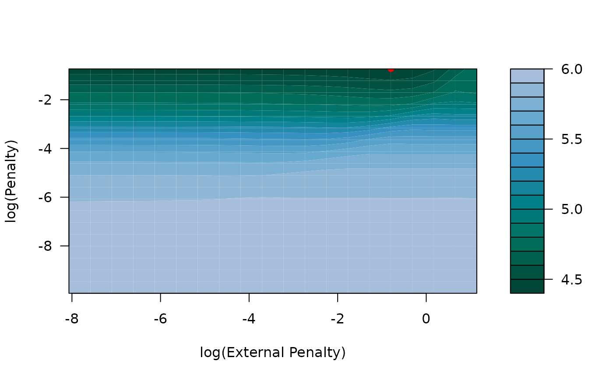

Generates plots to visualize the mean cross-validation error. If no external data was used in the model fit, a plot of the cross-validated error with standard error bars is generated for all penalty values. If external data was used in the model fit, a contour plot of the cross-validated errors is created. Error curves can also be generated for a fixed value of the primary penalty on x (p) or the external penalty (pext) when external data is used.
Usage
# S3 method for class 'tune_xrnet'
plot(x, p = NULL, pext = NULL, ...)Arguments
- x
A tune_xrnet class object
- p
(optional) penalty value for x (for generating an error curve across external penalties). Use value "opt" to use the optimal penalty value.
- pext
(optional) penalty value for external (for generating an error curve across primary penalties). Use value "opt" to use the optimal penalty value.
- ...
Additional graphics parameters
Details
The parameter values p and pext can be used to generate profiled error curves by fixing either the penalty on x or the penalty on external to a fixed value. You cannot specify both at the same time as this would only return a single point.
Examples
## load example data
data(GaussianExample)
## 5-fold cross validation
cv_xrnet <- tune_xrnet(
x = x_linear,
y = y_linear,
external = ext_linear,
family = "gaussian",
control = xrnet_control(tolerance = 1e-6)
)
## contour plot of cross-validated error
plot(cv_xrnet)

## error curve of external penalties at optimal penalty value
plot(cv_xrnet, p = "opt")